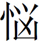
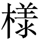
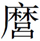

グレコ一本 二·○○ 一月五日
生レ出ル

ミ一本 一·一○ 一月六日或ル女二本 二·二○
詩と詩論第一册一本 一·六○ 一月七日
グウルモン詩抄一本 三·○○
R·S主義批判一本 一·一○
ソヴェト学生日記一本 一·一○
右側の月一本 一·八○
ドン·キホーテ二本 四·○○ 一月九日
Einführung in die Kunstgeschichte一本 七·○○ 一月十七日
Scandinavian Art一本 一三·○○
アルス美術叢書三本 六·○○ 一月十八日
小さき者へ一本 ○·八○ 一月二十日
長崎の美術史一本 一○·○○ 一月二十一日
南欧の空一本 二·五○
独逸文学二本 五·○○
The Best French Short Stories二本 一○·七○ 一月二十四日
三余札记二本 ○·六○
G.Craig’s Woodcuts一本 六·一○ 一月三十日
世界美術全集（20）一本 一·六○
森三千代詩集一本 作者赠 一月三十一日八三·六○○
草花模

二本 八·八○ 二月八日Künster-Monographien三本 十二·○○ 二月十三日
銀砂の汀一本 一·三○
独逸文学三辑一本 二·四○ 二月十四日
GUSTAVE DORÉ一本 一二·○○ 二月十五日
日本童話選集（3）一本 四·一○ 二月十七日
ラムラム王一本 一·七○
景正德本娇红记一本 盐谷节山寄赠 二月二十一日
殉難革命家列伝一本 一·一○ 二月二十八日
史的一元論一本 二·二○
改造文庫三本 ○·四○四六·○○○
雛一帖二十七枚 还讫 三月二日
唐宋大家像伝二本 一·○○
水滸伝畫譜二本 一·二○
名数畫譜四本 五·○○
海僊畫譜三本 三·三○
世界美術全集（21）一本 一·七○
Outline of Literature三本 二○·○○ 三月七日
J.Austen插画Don Juan一本 一五·○○
ソヴェトロシア詩選一本 ○·七○ 三月八日
Das Holzschnittbuch一本 三·二○
詩と詩論（3）一本 一·六○ 三月十六日
欧西[西欧]図案集一本 五·五○
Photograms of 1928一本 三·四○ 三月十九日
輪廓図案一千集一本 四·三○
唯物史観研究一本 三·三○
国史補三本 二·八○ 三月二十二日
皇明世説新語八本 二·八○
改造文庫一本 ○·五○ 三月二十八日
文蕓と法律一本 三·一○
コクトオ詩抄一本 三·一○
美術概論一本 二·八○
世界美術全集（22）一本 一·六○ 三月三十日
常山贞石志十本 八·○○ 三月三十一日九四·○○○
詩と詩論（二辑）一本 一·六○ 四月四日
書の消息一本 ○·八○
近代劇全集（27）一本 一·四○ 〖四月五日〗
图画醉芙蓉三本 五·二○ 〔四月五日〕
佛说百喻经二本 一·二○
表現主義の彫刻一本 一·二○ 四月七日
現代欧洲の蕓術一本 一·一○ 四月十三日
厨川白村集（3）一本 六·四○ 豫付全部
粕谷独逸語学叢書二本 三·六○ 四月十五日
郁文堂独和対訳叢書三本 三·四○
ソヴェト政治組織一本 七[○]·九○ 四月十八日
欧米ボスター図案集一帖 一·二○
Petits Poèmes en Prose一本 二六·○○ 四月二十三日
厨川白村集（5）一本 先付
フオードかマルクスか 一·○○ 四月二十六日
イヴァン·メストロヴィチ一本 三·六○
Animals in Black and White四本 五·六○ 四月二十九日
六四·二○○
史的唯物論及例証二本 一·四○ 五月二日
堍滅一本 ○·八○
世界美術全集（9）一本 一·七○ 五月四日
Short Stories of 1928一本 六·○○ 五月七日
PETER PAN一本 五·六○
庥用図案五百集一本 三·八○ 五月八日
工蕓美論一本 一·七○
新興文蕓全集（23）一本 一·一○ 五月十日
厨川白村全集（2）一本 五月十七日 豫付
A History of Wood-Engraving一本 五月二十日 二四·○○
六朝墓铭拓本七种八枚 七·○○ 五月二十一日
插画本項羽と劉邦一本 四·六○ 五月二十七日五六·七○○
Quelques Bois一帖十二枚 六·○○ 六月五日
Hermann Paul传一本 四·○○
Vigny诗集一本 二五·○○
Valéry 致友人书一本 三○·○○
Les Idylles de Gessner 七·五○
Le Jaloux Garizalès一本 一二·○○
世界美術全集（25）一本 一·七○ 六月七日
現代の美術一本 三·八○
フランドルの四大畫家論一本 三·四○
古希臘風俗鑑一本 二·一○
プレハノフ論一本 一·五○
DESERT一本 一·五○
鑑賞畫選一帖八十枚 五·八○ 六月十一日
露西箓現代文豪傑作集二本 二·四○ 六月十二日
世界性慾学辞典一本 三·二○ 六月十六日
全訳グリム童話集四本 一·九○
オルフエ一本 二·二○
グンクゥールの歌

一本 五·七○ 六月十九日Animals in Black and White二本 三·三○ 六月二十三日
全相平话三国志三本
三国志通俗演义二十四本 一○·八○
プレハーノフ選集二本 三·五○ 六月二十四日
西比利亜から淶蒙へ一本 四·○○
厨川白村全集（1）一本 先付 六月二十六日
世界美術全集（26）一本 一·七○
自由と必然一本 ○·九○
赤い子供一本 ○·六○
ソ·ロ·漫畫、ポスター集一本 四·七○
東西文蕓評伝一本 三·六○
詩と詩論（4）一本 二·○○
動物学宓習法一本 一·○○
チエホフとトルストイの回想一本 ○·九○ 六月三十日
一五八·四○○
Pravdivoe Zhizneopisanie一本 靖华寄来 七月三日
Pisateli一本 同上
創作版畫第五至第十辑五[六]帖 六·○○ 七月五日
唯物史観一本 ○·九○ 七月六日
グリム童话集（5）一本 ○·五○
ハウフの童話一本 一·五○
漁夫とその魂一本 ○·七○
革命蕓術大系一本 七月九日 一·一○
曼殊遗墨第一册一本 小峰赠 七月十日
老子原始一本 三·三○ 七月十九日
裂地と版畫一帖六十四枚 五·○○
観光紀遊三本 李秉中寄赠 七月二十二日
マルクス主義批評論一本 一·八○ 七月二十五日
プロレタリア蕓術教程（Ⅰ）一本 一·二○
新らしい言葉の字引一本 二·四○
伊太利ルネサンスの美術一本 三·六○ 七月二十六日
文蕓復興一本 二·六○
袋路一本 一·八○
世界美術全集（3）一本 一·八○ 七月二十七日
郭仲理画椁拓本影片十二枚 兼士寄赠 七月二十八日
厨川白村全集（4）一本 先付 七月三十日三四·二○○
版畫第十一十二辑二帖二十枚 一·八○ 八月三日
外套一本 素园寄赠
小百梅集一本 一·九○ 八月六日
言語その本質、窎達及起原一本 九·六○ 八月八日
Les Artistes du Livre五本 三七·○○ 八月二十七日
Le Nouveau Spectateur二本 季志仁寄赠
高蹈紫葉二会聯合図録一本 世界文艺社寄赠
茜窗小品二本 二·四○
世界美術全集（32）一本 一·七○ 八月三十一日五四·四○○
近代短篇小说集一本 一·二○ 九月九日
新興文学集一本 一·二○
厨川白村集（六）一本 预付 九月十日
社会科学の豫備概念一本 二·四○ 九月十一日
史叢録一本 六·○○
支那歷史地理研究一本 四·四○ 九月十六日
支那歷史地理研究 編一本 六·四○
編一本 六·四○
景印明刻闺范四本 广平赠 九月二十日
世界美術全集（三十三）一本 一·八○ 九月二十五日
図案資料叢書五本 六·五○ 九月二十八日
史的唯物論ヨリ見タル文学一本 一·七○
露西亜革命の豫言者一本 三·五○
文学と绖涇学一本 二·六○
詩人のナプキン一本 二·五○四○·二○○
弁証法等二本 一·五○ 十月七日
鑑賞畫選八十枚一帖 六·五○
Flower and Still-life Painting一本 四·九○ 十月八日
My Method by the leading European Artists一本 四·九○
Bliss：Wood Cuts一本 ○·七○
Le Bestiaire一本 八·○○ 十月十四日
若きソヴェト·ロシヤ一本 二·○○ 十月十七日
レーニンの幼少時代一本 ○·七○ 十月十九日
チェホフ書簡集一本 ○·七○
R.Gibbings木刻三枚 柔石交来 十月二十日
世界美術全集（10）一本 一·八○ 十月二十三日
エピキュルの園一本 二·八○
文化社会学概論一本 三·六○
図案資料叢書六本 八·四○ 十月二十八日
世界観としてのマルキシズム一本 ○·五○
コムミサール一本 二·二○
支那の建築一本 六·二○五四·四○○
契诃夫死后廿五年纪念册一本 靖华寄赠 十一月六日
造型蕓術社会学一本 一·三○ 十一月十四日
表現紋集一帖百枚 四·○○
ロシヤ社会史（1）一本 一·三○ 十一月十八日
Neue Kunst in Russland一本 二[三]·四○ 十一月十九日
雕刻照象信片十枚 二·○○ 十一月二十二日
史的唯物論一本 一·四○ 十一月二十七日
蕓術と無産階級一本 一·六○
最新独和辞典一本 四·五○
かくし言葉の字引一本 一·六○
世界美術全集（11）一本 一·七○
Great Russian Short Stories一本 六·四○ 十一月二十九日
マルクス主義批判者の批判一本 二·○○ 十一月卅日
文蕓批评史一本 ○·七○
現代美術論集一本 ○·七○四一·三○○
近代劇全集（30）一本 一·四○ 十二月四日
カンヂンスキイ蕓術論一本 八·二○ 十二月五日
グリム童話集（六）一本 ○·五○ 十二月十日
Plato’s Phaedo一本 二五·四○ 十二月十六日
The Seventh Man一本 五·○○
支那古代绖涇思想及制度一本 九·六○ 十二月十七日
詩の起原一本 六·六○
近代唯物論史一本 二·○○
文学理論の諸問題一本 二·四○
ブロレタリア蕓術教程（2）一本 一·四○
画譜一千夜物語（上）一本 一一·○○ 十二月十八日
蠹魚之自伝一本 二·五○
滯欧印象記一本 三·○○ 十二月二十日
ゲオルゲ·グロツス（上）一本 三·八○
蕓術学研究（1）一本 二·七○
ロシヤ社会史（2）一本 一·○○ 十二月二十二日
考古学研究一本 九·○○ 十二月二十六日
ボオドレール研究一本 三·五○
機械と蕓術との交流一本 三·七○
世界美術全集（27）一本 二·○○ 十二月二十九日
清代学者象传四本 （豫约） 一八·○○
Bild und Gemeinschaft一本 ○·七○
王道天下之研究一本 一一·○○ 十二月三十日
改造文庫二本 ○·六○
Les Fleurs du Mal一本 一·二○
瘆農ロシア戢劇集一本 一·五○ 十二月卅一日
大旋風一本 一·五○
美術叢書三本 一二·○○
日本木彫史一本 八·○○一五九·二○○
总计八八六·四○○，
平匀每月用泉七三·八六六……
[1] 朝华社 即“朝花社”。鲁迅和柔石、崔真吾、王方仁、许广平组织的文艺团体。1928年11月成立于上海，1930年1月结束。该社主要介绍东欧、北欧文学和外国版画。先后出版《朝花》周刊、《朝花旬刊》、版画丛刊《艺苑朝华》以及《近代世界短篇小说集》等。朝花社筹建资金为五百元，鲁迅承担二百元，分别于本日、2月20日、3月5日和10月14日各支给五十元，并于6月间增资一百元，作为许广平的参股资金。
[2] 所看电影为《皇后私奔记》（The Private Life of Helen of Troy），美国第一国家影片公司1927年出品。爱普庐电影院，在北四川路海宁路。后毁于“一·二八”战火。
[3] 即《现代新兴文学的诸问题》。论文，日本片上伸作，鲁迅译。1929年4月上海大江书铺出版。
[4] 移至十九号屋 应为移居景云里十七号。周建人一家仍居十八号，两户打通，出入仍由十八号。
[8] 《Faust》 《浮士德》。根据歌德诗剧改编的电影。美国米高梅影片公司1926年出品。
[9] 金子光晴浮世绘展览会 展览会设于蓬路（塘沽路）的日本人俱乐部，展出金子光晴在上海所绘名所百景。浮世绘，日本德川幕府时代（1603—1867）兴起的一种民间版画。
[10] 《续三剑客》 原名《Three Mustelters》，美国联艺电影公司1921年出品。
[11] 六三公园 即“六三花园”。为日本人白石六三郎所办的游乐场所。地址在花园路南。
[13] 当票一张 韩侍桁出国前典当皮袍一件，因典期将满，故将当票寄请鲁迅代赎，鲁迅于本年5月往北平时为之赎出，并于6月2日送往韩宅。
[16] 即《新时代的预感》。论文，日本片上伸作，鲁迅译文发表于《春潮》月刊第一卷第六期（1929年5月），后收入《译丛补》。
[17] パン·ウル个人绘画展览会 即日本人宇留川的个人画展。
[18] 因赛马多停业者 当时上海的跑马厅（赛马场）在南京路西藏路附近，每逢5月第一周周一到周三及周六，11月第一周周一到周三举行赛马。本日是5月第一周的周三。
[19] 交《奔流》稿 指托张友松代校《奔流》第二卷第一本稿。
[20] 《木刻集》之二 即《近代木刻选集（2）》。为《艺苑朝华》第三辑。
[21] 略集行李 鲁迅将于13日赴北平探亲。此次探亲前后共二十四天，于6月5日回沪。
[22] 燕京大学 美国基督教会所办的大学，址在今北京大学内。1919年至1920年由北通州协和大学、北京汇文大学、华北女子协和大学合并而成。是日鲁迅往讲《现今的新文学的概观》，记录稿后收入《三闲集》。
[23] 往北京大学第二院演讲 因听众达千余人，后改在第三院礼堂举行。此次演讲系北大国文学会主办。讲题不详，讲稿佚。
[25] 磨石山西山病院 磨石山，通称“模式口”，在北京西郊，邻近名胜区“八大处”。西山病院，全称“西山福寿岭疗养院”。
[26] 第二师范学院 即北平大学第二师范学院，前身即北京女子师范大学。该校学生二人来约请演讲，鲁迅次日前往，主要谈青年出路问题。讲稿佚。
[27] 第一师范学院 即北平大学第一师范学院，前身为北京师范大学。该校学生许延年和次丰二人来约请演讲，鲁迅次日前往，主要谈文艺界的形势及与政治的关系。讲稿佚。
[28] 所观电影为《天涯恨》（Where the Pavement），美国大都会影片公司1923年出品。东海电影院，在提篮桥海门路。
[29] 《古城末日记》 原名《The Last Days of Pompeii》。故事片，美国好莱坞根据科顿的同名历史小说改编，1925年出品。北京大戏院，在北京路贵州路口。
[30] 《北极探险记》 原名《Lost in the Arctic》，美国福克斯影片公司1928年出品。
[31] 代广平付朝华社出版费 指鲁迅以许广平名义给朝花社的参股增资。参看本卷第122页注〔1〕。
[32] 即《论文集〈二十年间〉第三版序》。苏联普列汉诺夫作，鲁迅译文发表于《春潮》月刊第一卷第七期（1929年7月），后收入《艺术论》中译本。
[34] 《裴彖飞集》二本 鲁迅嘱许羡苏从北平寓所藏书中找出留学日本时托丸善书店从德国购得的《裴多飞集》二册寄来上海，于26日托柔石赠与白莽。不久白莽被捕，书被没收。
[35] “稿”应作“书”。指《蔚蓝的城》，苏联短篇小说集，刘穆、薛绩辉译，1929年上海远东图书公司出版。
[37] 寄李小峰信 北新书局将资金挪作他用，长期拖欠《奔流》作者稿费，本月应付鲁迅的版税亦未予支付，鲁迅于11、13、18、29日连续写信催问，李迟未作答。
[38] 指《艺苑朝华》之第三辑《近代木刻选集（2）》和第四辑《比亚兹莱画选》。
[39] 宇都齿科医院 日本人宇都氏办的牙科医院，址在狄斯威路（今溧阳路）。
[40] 《嘉尔曼》 原名《Garmen》（《卡门》），美国爱赛耐影片公司1916年出品。
[41] 寄还各种投《奔流》稿 因北新书局长期拖欠《奔流》稿费，鲁迅拟编至第二卷第四本停编，因将来稿退还各作者。
[42] 访律师杨铿 鲁迅因多次向北新书局催索版税无结果，故委托律师代为交涉。
[43] 疑即苏联卢那察尔斯基所作《文艺与批评》中的两篇译稿，收入水沫书店版《文艺与批评》。
[44] 小峰来 李小峰得知鲁迅延请律师向北新书局交涉版税，来求和解。
[46] 达夫来 当时郁达夫在杭州，李小峰电请其来沪参与调解与鲁迅的版税纠纷。是夜郁即为此来访，并建议另邀在杭州的章廷谦也来沪协同调解。
[47] 是日会上主要议定：北新书局当年分四期偿还拖欠鲁迅的版税共八千多元，次年起继续偿还，总共偿还欠款约两万元；鲁迅作价收回旧著纸型；此后北新书局出版鲁迅著作，必须加贴版税印花并每月支付版税四百元；鲁迅续编《奔流》，每期出版时北新书局将稿费交由鲁迅转发各作者。
[48] 钦文来 为筹建陶元庆墓，许钦文到上海、南京等地募款。
[49] 林语堂语含讥刺 指林语堂说鲁迅受他人挑拨而与北新书局涉讼的言论。
[50] 铅字二十粒 这些铅字是鲁迅在北新书局出版各书书名的首字，用以分别盖在初版或再版各书的版税印花上，以防止书局滥印。
[51] 为陶元庆君买冢地 陶元庆逝世后，许钦文募集安葬费，连鲁迅所捐在内，共得三百五十元。后在杭州玉泉购地三分余，围铁栅栏，题名“元庆园”。
[52] 诉讼费 8月中旬，鲁迅委托杨铿与北新书局交涉时，原拟提起诉讼，即交“公费”二百，后既经调解了结，故杨退还诉讼费一百五十元。
[53] 办理费 根据议定，鲁迅自北新取得积欠版税中的百分之五作为律师办理费。
[54] 即《青湖纪游》。俄国确木努易作，因《朝花旬刊》停刊，鲁迅译文乃发表于《奔流》月刊第二卷第五本（1929年12月），后收入《译丛补》。
[56] 付雪峰校对费 指冯雪峰为鲁迅所译《文艺与批评》一书做校对的酬金。
[59] 《奔流》稿费 根据8月25日协议，北新书局先后于本日及11日将《奔流》第二卷第五本稿费三百元送交鲁迅转发作者。此后鲁迅即着手续编该刊。
[60] 《勇敢的约翰》由匈牙利考罗卓译成世界语，孙用据此译为中文。鲁迅读中译稿后，拟介绍出版，函请孙用将世界语译本寄来，以便校订和选取插图。
[61] 与靖华笺 系约曹靖华翻译苏联绥拉菲摩维支的长篇小说《铁流》。
[62] 即制《奔流》第二卷第五本用的裴多菲、契诃夫、阿霍、高尔基、理定像插图铜版，共五块。
[63] 此来谈及出版《勇敢的约翰》事。张友松等同意该书由春潮书局出版，后又改变此许诺。
[64] 编《奔流》二之五讫 本期《奔流》因北新书局多方拖延，第二年春始印出。此后由于书局兴趣转移，遂不复出刊。
[65] 《洞窟》 小说，苏联札弥亚丁著，鲁迅译文发表于《东方杂志》第二十八卷第一号（1931年1月），后收入《竖琴》。
[66] 《恶魔》 小说。苏联高尔基著，鲁迅译讫并作《译后附记》，于10日寄李小峰，发表于《北新》半月刊第四卷第一、二期合刊（1930年1月），后收入《译丛补》。
[67] 往暨南学校演讲 讲题为《离骚与反离骚》。记录稿发表于《暨南校刊》第廿八至第卅二期合刊（1930年1月18日），未收集。
[68] 金鸡公司 即Golden Cockerell Press，英国伦敦的一家出版社。鲁迅曾多次从该社订购图书。
[69] 《四十一》序 即曹靖华作的《〈第四十一〉后序》，发表于《萌芽月刊》第一卷第二期（1930年2月）。
[71] 旧欠俱讫 自9月21日至12月23日，鲁迅四次共收北新书局还欠版税八千二百五十六元八角三分四厘。
[72] 神户版画之家 日本神户一家出售日本版画家作品的商行。山口久吉主持。1924年起创办版画专刊《HANGA》（《版画》），1930年停刊。
[73] 林庚白来信谩骂 林庚白于24日造访景云里鲁迅寓所，因鲁迅未见，故来信指责。信中说：“一，鲁迅居然也会‘挡驾’吗？二，鲁迅毕竟是段政府底下的教育部佥事不是？三，鲁迅或者是新式名士？因为名士不愿随便见人，好像成了原则似的。四，像吴稚晖遗留的鲁迅是否革命前途的障碍物；要得要不得？”又附《讽鲁迅》诗一首。